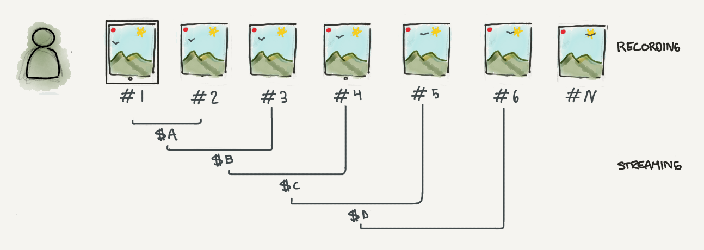
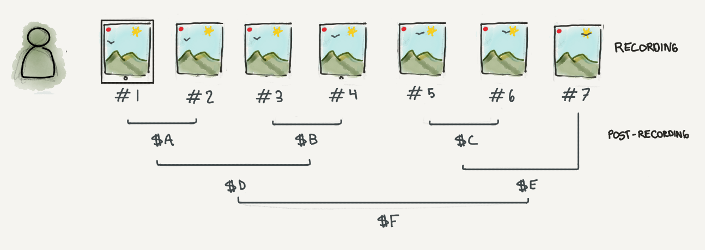

TL;DR: video recording devices or apps that follow ‘a standard’, sign each frame of a video being recorded with the last frame’s signature. Video hosting platforms or news outlets can compute if they have the last frame (and wether the video has been tampered) - and surface this information to users using merkle trees
A half baked idea
As an increasing amount of user generated video on platforms like Youtube, Twitter and Facebook cover current events - and become part of the ‘news’ - a significant (though certainly not new) problem arises for the viewer: can I trust this content?
Trust is built by consistency and transparency over time. A simpler question to ask of a piece of content is: Is this video edited in a tendencious way? Simpler still: is this the whole video?
Recently, before going to sleep, I was thinking about how a tiny minority of content on platforms can be leveraged to influence large groups. This is not new: content crafted for influence. The speed of delivery is new though - predicated on platforms that depend on user generated content.** Edited videos are, I think, the most convincing: they show partial truths**. I was wondering if there was a simple way to validate to me as the user, that I’m looking at **_the full video. _**
So, this is a half baked idea to attempt to solve the problem (with some glaring problems) - and hopefully learn a little. Note: this is a means to learn - I’m not a video encoding, security or cryptography expert.
Solution:
Smartphone apps or cameras implement a standard that appends to each each frame the final frame’s signature. From this last signature, it should be possible to:
See if the current frame is the last frame - you have seen the full video
Validate that the frames, in order, lead to the last frame - there are no frames removed or added
A way to accomplish this could be to use Merkle trees, or a chain of signatures. Specifically video recording devices or apps that follow the standard would:
In sequential order, sign every frame, where the signature is the current frame’s hash and the previous frame’s signature. A similar approach is proposed in this ,paper to sign video streams.

Each frame in a video is hashed, and a signature is created from the previous signature and the current frame. Signature B ($B), is created by hashing the hishing the current frame and signing the previous signature and the current frame
In practice (and when not streaming) both steps can happen once recording stops

In practice (not streaming), a Merkle tree can do the heavy lifting. Even in the streaming context, a window + buffer can be used.
Once the recording stops (when the stop button is pressed), the video is ‘re-coded’ to include the last frame’s signature in all frames.
Platforms that receive videos that follow this standard can:
Prove you have seen the last frame of the video or not - and display this information to end users
Prove the video has not been edited to have omissions, additions or replacements
This poses interesting questions:
How should this information be shown?
Does this change user interaction when the video is being uploaded? (a leak to an attacker)
Should this information influence how videos are ranked?
Critical issues / attacks:
Given a video that implements the standard (has the final frame signature embedded), remove the signature, edit and upload.
This is essentially an ecosystem attack - you can still go to websites without using SSL - but as a whole the ecosystem (and its tools) has shifted to make it clear, it’s probably not safe.
This is a significant challenge, mitigated primarily by adoption incentives.
Given a video that implements the standard, remove the signature, edit video and resign the video to append a new final frame signature that matches the edit.
This is a problem similar to the Certificate Authority problem, though with some additional complications.
In the naive case - we assume an attacker cannot steal the signing certificate embedded in apps and devices. In this case we can validate the video has been signed with a valid certificate.
The non-naive case seems super complicated: if an attacker can steal a valid signing certificate, then it seems to me the degree of validation possible is proportional to the constraints added. This is seriously bugging me, so I think it’ll imply another full post in the future, and some more research into cryptography and perhaps the old days of DRM for inspiration.
In a future post I’ll show a simple code example and attempt to tackle / reason through questions about applicability.